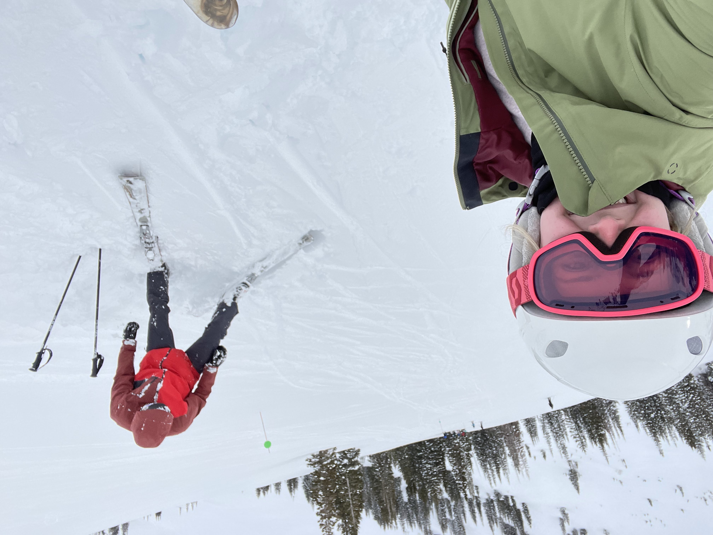

While school and work take up a majority of my time, there are lots of other things that I enjoy doing. Most invlove being outside and active. I love physical activity and being in the great outdoors.
One of my favorites is golf. I have golfed since I was 12 years old and played in high school. I try to get out as much as I can and I love the never-ending challenge that golf provides.
Other sports that I like are basketball, baseball, rugby, tennis, etc.... I also love to hike and camp and be 'lost' in nature.
Motor Vehicles
A few years ago I bought a motorcycle, and I have been hooked ever since. I enjoy riding up the mountians and enjoying the the freedom of a bike. I have been learing more and more about how they work and have love every second of it.
My job as a valet has also exposed me to the world of automobiles. I have loved getting to drive some really nice classic cars and my appreciation for these machines has become more of a hobby for me.
Winter Sports
Growing up in Utah, I was introduced to skiing and snowboarding at a very early age. I have been snowboarding since I was about 10 years old and recently began to pick up skiing. Winter in the Utah mountains is a beautiful world and I love experiencing it on a snowboard.
Most of all, however, I love spending time with those important to me. My wife and family are the most important to me and I spend every second I can with them. I have been blessed to be surrounded by many good friends and enjoy my hobbies more when I can do them with those I love.
By Spencer Hawes · Images by Spencer Hawes